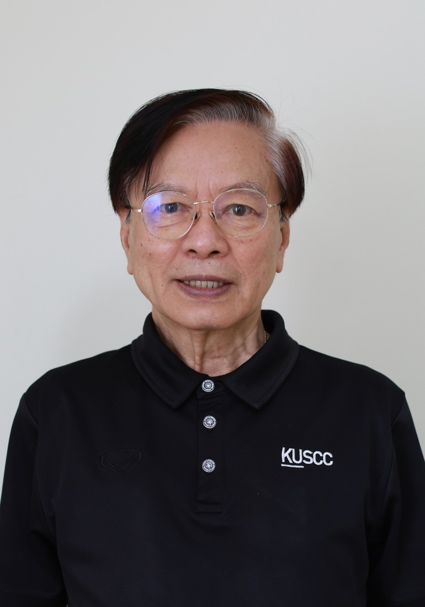

บริหารความเสี่ยงทั่วทั้งองค์กร
ใช้ระบบบริหารความเสี่ยงทั่วทั้งองค์กร เพื่อความมั่นคงยั่งยืนของ สอ.มก. และสมาชิก
ผู้สมัครกรรมการ สายวิชาการ · 2570
ผศ.น.สพ.ดร.
อดีตคณบดี คณะสัตวแพทยศาสตร์
รองประธานกรรมการ สอ.มก.
จากบทบาทคณบดีคณะสัตวแพทยศาสตร์ และนายกสัตวแพทยสภา สู่การทำงานในคณะกรรมการ สอ.มก. ด้านการบริหารความเสี่ยงและการเงิน เพื่อความมั่นคงยั่งยืนของสมาชิก
แนวคิดในการทำงาน
ใช้ระบบบริหารความเสี่ยงทั่วทั้งองค์กร เพื่อความมั่นคงยั่งยืนของ สอ.มก. และสมาชิก
พัฒนาระบบ IT เพื่อการติดต่อสื่อสารกับสมาชิก โดยเฉพาะช่องทางบริการสินเชื่อ ให้สะดวก รวดเร็ว
เพิ่มการป้องกันภัยโจมตีทางไซเบอร์ และการแฮกข้อมูลของ สอ.มก. และของสมาชิก
เงินทุนสำรองไม่ต่ำกว่าเกณฑ์มาตรฐานตามกฎหมาย
นำระบบธรรมาภิบาล และการมีจรรยาบรรณทุกภาคส่วน เพื่อการบริหาร สอ.มก.
ส่งเสริมการสัมมนา และการให้ความรู้ด้านเศรษฐกิจ สังคม สาธารณสุขแก่สมาชิกอย่างต่อเนื่อง
มหาวิทยาลัยเกษตรศาสตร์ (รองคณบดี พ.ศ. 2539–2541)
มหาวิทยาลัยเกษตรศาสตร์
สัตวแพทยสภาแห่งประเทศไทย
สหกรณ์ออมทรัพย์มหาวิทยาลัยเกษตรศาสตร์ จำกัด
เกิดที่จังหวัดนครสวรรค์ รับราชการที่คณะสัตวแพทยศาสตร์ มหาวิทยาลัยเกษตรศาสตร์ ตั้งแต่ปี พ.ศ. 2520 จนเกษียณอายุราชการในตำแหน่งคณบดีคณะสัตวแพทยศาสตร์.
{kind=link}